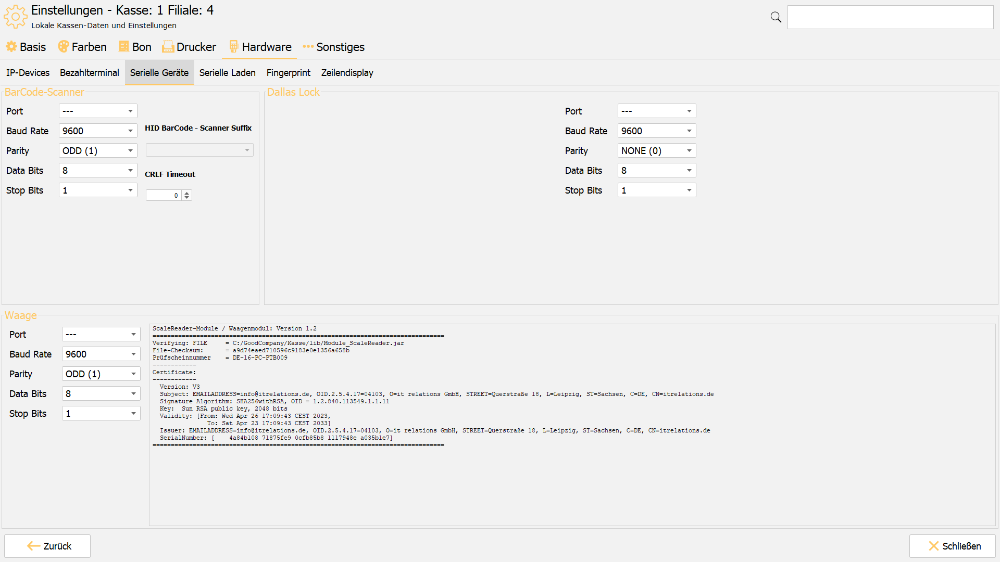

Waagen
Sobald an einer Kasse eine Waage hängt, wird sie zum eichpflichtigen Messgerät. Damit gelten Anforderungen, die über die Technik hinausgehen — und für die der Partner geradesteht.
Eine Kasse mit angebundener Waage darf erst in Betrieb gehen, wenn die Konformitätsbewertung — die Ersteichung — erfolgt ist. Das gilt für jedes einzelne System, auch wenn die Anbindung als solche zertifiziert ist. Den Eichbeamten rechtzeitig bestellen.
Überblick
| Beteiligt | Rolle | Was dort eingerichtet wird |
|---|---|---|
| Waage | liefert Gewicht und Grundpreis | COM-Parameter, Hauptanzeige (eigene Anzeige oder per VCODisp auf dem Kassenbildschirm) |
| ITR Kasse | bucht den Wiegeartikel, zeigt das Ergebnis | Waagenmodul, Kundendisplay |
| CentralPoint | pflegt den Wiegeartikel | Tara, Preisebene, Option „Wiegeartikel" |
| Eichamt | prüft und eicht das System | Ersteichung, Kennzeichnungsschild |
Voraussetzungen
- Eine freigegebene Waage mit dem Protokoll Dialog-6 oder VCODisp:
| Hersteller | Modelle |
|---|---|
| Digi | DS-983, DS-982, DS-782 |
| Mettler Toledo | Ariva S, Geräteklasse FreshWay |
- Ein vollständiges Typenschild an der Waage mit Min, Max, Eichwert
eund Teilungd. - Eine gültige Lizenz für das Waagenmodul an der Kasse.
- Ein Kundendisplay, das die Anforderungen unten erfüllt.
- Die COM-Schnittstelle der Kasse ist bekannt.
Die acht Pflichten des Partners
1. Die Waage hat eine Hauptanzeige. Die Wiegeinformationen müssen auf der Hauptanzeige der Waage erscheinen. Das ist:
- bei Dialog-6 die eigene Anzeige der Waage — der Kassenbildschirm ersetzt sie nicht;
- bei VCODisp der Bildschirm der Kasse — die Software von Mettler Toledo stellt die Wiegeinformationen dort dar, eine separate Waagenanzeige entfällt.
2. Die Hauptanzeige ist richtig angebracht. Gut lesbar und an der Stelle, die das Baueinheiten-Zertifikat vorgibt.
3. Das Kundendisplay ist ausreichend groß und lesbar. Unabhängig davon, wo die Hauptanzeige liegt: Hängt an der Kasse ein Kundendisplay, muss die Belegtabelle dort groß genug dargestellt sein. Kontrast, Farben und Schriftgröße so wählen, dass der Kunde die von der Waage gelieferten Angaben klar erkennen kann, ohne von anderen Bildschirmelementen abgelenkt zu werden.
4. Mindestens 8 Zoll, quer angebracht. Kundendisplays müssen mindestens 8 Zoll messen — auch wenn sie nicht die Hauptanzeige sind. Bei 8 Zoll muss die Belegtabelle über die volle Displaybreite gehen, mit möglichst großer Schrift, und die Spalten Menge, Artikelname, Einzelpreis und Summe müssen eingeblendet sein. Das Display wird quer angebracht, die längere Seite waagerecht.
5. Ersteichung je System. Siehe Warnung oben.
6. Kennzeichnungsschild auf jeder Kasse. Siehe unten.
7. Zugang für den Eichbeamten. Er meldet sich an der Kasse mit dem Benutzer eichamt an; damit startet das Waagenmodul.
8. Test vor der Eichung. Melden Sie sich testweise selbst mit diesem Zugang an, stellen Sie die COM-Parameter ein und speichern Sie — bevor der Eichbeamte kommt.
Einrichtung
- Waage anschließen und einschalten.
- An der Kasse mit dem Benutzer
eichamtanmelden — damit startet das Waagenmodul. - Waage anbinden. Bei Dialog-6: COM-Parameter der Waage einstellen und speichern; den COM-Port tragen Sie im Setup-Wizard ein, etwa
COM1. Mit---ist die Waage deaktiviert. Bei VCODisp: wie im Abschnitt Mettler Toledo Ariva über VCODisp beschrieben. - Wiegeartikel im CentralPoint pflegen — Reiter Wiegeartikel am Artikel:
- Nur Grundpreis übermitteln schickt statt des Gesamtpreises den Grundpreis an die Waage.
- Tara als Kommazahl in Kilogramm (
0.345oder0,345) oder als ganze Zahl in Gramm (345). - Mehrere Taragewichte mit Namen, getrennt durch Semikolon:
Kleines Gefäß=0,100;Mittleres Gefäß=0.200;Großes Gefäß=300
- Kennzeichnungsschild anbringen — siehe unten.
- Eichbeamten bestellen. Das braucht Vorlauf und wird in der Projektplanung leicht vergessen.
- Wiegeartikel buchen und prüfen, ob Gewicht und Preis übernommen werden.

Mettler Toledo Ariva über VCODisp
Beispiel Ariva S. Die Waage hängt per USB an der Kasse; die Software VCODisp von Mettler Toledo zeigt die Wiegeinformationen auf dem Kassenbildschirm. Empfohlen ist der Kommunikationstyp USB Ser/HID.
- An der Waage den Kommunikationstyp einstellen — Gruppe 3, Parameter 3.1 Kommunikationstyp (→0← öffnet Gruppe 3, →T← springt zu Gruppe 4):
2– USB Ser/HID
- VCODisp an der Kasse installieren — Setup
VCODisp-1.04.01-0047.msiaus dem Partnerportal ausführen. - Waage per USB anschließen und im Windows-Geräte-Manager prüfen:
- zusätzliches USB-Eingabegerät und HID-konformes Gerät unter Eingabegeräte (Human Interface Devices)
- VCODisp konfigurieren — in
C:\Program Files (x86)\Mettler\VCODisp\etc\vcodisp.xmldas Elementcommanpassen (Beispiel unten). In derselben Datei legen Sie die Anzahl der Monitore und die Gestaltung der Mettler-Dialoge fest. - VCODisp starten mit
C:\Program Files (x86)\Mettler\VCODisp\bin\vcodisp-start.bat. - An der Kasse VCODisp aktivieren — unter Einstellungen → Alle Einstellungen nach
VCODispsuchen und aktivieren.
Element comm in der vcodisp.xml:
<comm portscan="yes" type="usb" name="COM3" ... />Etiketten: Die Kasse kennt ein kleines und ein großes Etikett. Welches gedruckt wird, wählt die Kasse automatisch anhand des druckbaren Bereichs des Etikettendruckers.
Kennzeichnungsschild
Jede Kasse mit angebundener Waage braucht eines. Ohne ist die Eichung nicht vollständig. Inhalt so oder ähnlich:
it relations GmbH
Typ: itrCR - Module_ScaleReader
Prüfscheinnummer DE-16-PC-PTB009
Software-Identifikation:
Version <Version>
Prüfsumme / File-Checksum: <Prüfsumme>
CN=www.itrelations.de, O=it relations GmbH
Version und Prüfsumme müssen zu der Fassung des Waagenmoduls passen, die auf der Kasse tatsächlich läuft. Die Werte aus einer älteren Installation zu übernehmen, macht das Schild falsch.
Version und Prüfsumme der laufenden Fassung zeigt die Kasse beim Start im Startbild des Waagenmoduls (ScaleReader-Module / Waagenmodul mit Version, File-Checksum und Zertifikat). Das Startbild erscheint, sobald unter Einstellungen → Hardware → Serielle Geräte → Waage ein Port ausgewählt ist. Alternativ: an der Kasse mit dem Benutzer eichamt anmelden und im Waagenmodul den Reiter Info & Version öffnen.
Zugelassen sind laut Baueinheiten-Zertifikat DE-16-PC-PTB009, Revision 2 vom 12.05.2023:
| Softwaremodul | Version | Prüfsumme |
|---|---|---|
Module_ScaleReader.jar |
1.x | 65db89f4fc01feec5b3bdc740a9a4609 |
Module_ScaleReader.jar |
1.x | a9d74eaed710596c9183e0e1356a658b |
Die Kasse darf nur eichpflichtig verwendet werden, wenn eine der zugelassenen Prüfsummen angezeigt wird. Laut Zertifikat soll der Bediener das täglich prüfen — weisen Sie den Betreiber darauf hin.
Der Firmenname auf dem Schild stammt aus dem Baueinheiten-Zertifikat und bleibt unverändert, solange das Zertifikat darauf ausgestellt ist — auch wenn die Firma inzwischen anders heißt.
Die Gestaltung ist dem Partner überlassen. Pflichtangaben laut Punkt 8.1 des Baueinheiten-Zertifikats: Firmenname, Typbezeichnung itrCR, Nummer des Baueinheiten-Zertifikats DE-16-PC-PTB009 und Software-Identifikation (Version und Prüfsumme). Das Schild sitzt vorn oder seitlich am Gehäuse des PCs.
Ergebnis prüfen
- Das Gewicht erscheint auf der Hauptanzeige — der Waagenanzeige bzw. bei VCODisp dem Kassenbildschirm.
- Menge, Artikelname, Einzelpreis und Summe erscheinen auf dem Kundendisplay.
- Der gebuchte Betrag entspricht Gewicht mal Grundpreis, abzüglich der gewählten Tara.
- Die angezeigte Prüfsumme steht in der Tabelle der zugelassenen Versionen.
- Das Kennzeichnungsschild ist angebracht und trägt Version und Prüfsumme aus dem Startbild des Waagenmoduls.
Fehlerbehebung
- Keine Werte von der Waage: COM-Port und Parameter prüfen; der Port lässt sich im Windows-Geräte-Manager nachsehen.
- Waage reagiert gar nicht: Prüfen, ob im Setup-Wizard als Waagen-Port
---eingetragen ist. Dann ist die Waage deaktiviert. - Waagenmodul startet nicht: Lizenz für das Waagenmodul prüfen.
- Falscher Preis: Tara und Preisebene des Artikels prüfen.
- VCODisp zeigt kein Gewicht: Prüfen, ob die Waage im Geräte-Manager erscheint, ob in der
vcodisp.xmltype="usb"steht, ob VCODisp gestartet und an der Kasse aktiviert ist. - Menü der Waage nicht erreichbar: USB-Kabel trennen und VCODisp beenden.
Zu beachten
Die Eichung gilt je System, nicht je Modell. Eine zweite baugleiche Kasse in derselben Filiale braucht ihre eigene Eichung und ihr eigenes Schild. Bei einem Austausch der Kassenhardware oder einem Wechsel der Waage ist zu prüfen, ob die Eichung erneuert werden muss.
Ob eine Konstellation eichrechtlich zulässig ist, entscheidet das Eichamt — nicht der Hersteller und nicht der Partner. Diese Seite beschreibt die technischen Anforderungen; sie ersetzt keine Auskunft der Eichbehörde.
Das gültige Baueinheiten-Zertifikat DE-16-PC-PTB009, Revision 2 vom 12.05.2023 hängt an dieser Seite. Es ersetzt die Fassungen von 2016 und 2019.